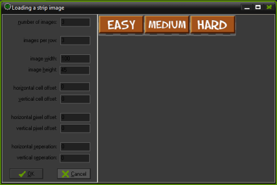

Tutorial
Page 2 of 7
Setting Up Resources
The presentation of our Tic-Tac-Toe game will make use of a background,
a sprite for the grid, sprites for the noughts and crosses and a difficulty setting.
First, let's setup our background:
Click on Resources, select Create Background and then choose the Load Background option:
Navigate to the location of Wood_BG.png and select this file as the background to use.
Next, let's setup our sprites:
Click on Resources, select Create Sprite and choose
the Load Sprite option. Navigate to the location of Grid.png and select this as our sprite: this sprite represents
the grid the game is played on. Change the name of the sprite from the default name sprite0 to sprGameBoard. Note
that for the purposes of this tutorial we will maintain a convention of naming sprites "spr{spriteName}".
Do the same for O.png and X.png, setting the names of these sprites to sprNought and sprCross respectively.
Finally we're going to load the sprite that we will use for setting the difficulty of the computer AI. Create a new
sprite and rather than selecting Load Sprite select the Edit Sprite option and a new window will appear.
From the menu of this new window select File, then Create From Strip and navigate to the location of DifficultyButtons.png.
You will then be presented with a further window that allows you to setup the strip image like so:

Set the number of images to 3, the images per row to 3, the image width to 100 (a third the width of the image)
and the image height to 45 (the height of the image) and select OK. Then select the tick
icon from the previous window.
You have now setup the resources required for this tutorial.
Click on the Next button to go to the next page of the tutorial.